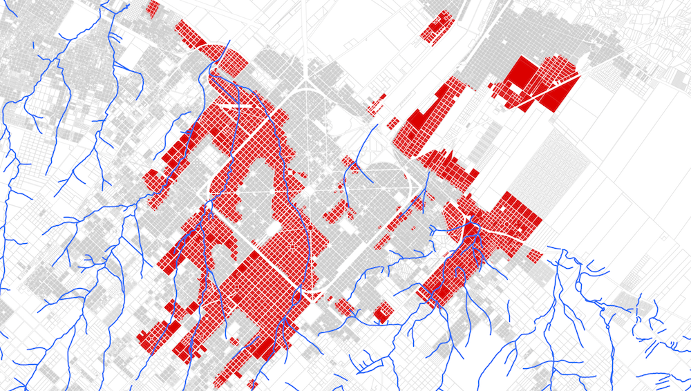
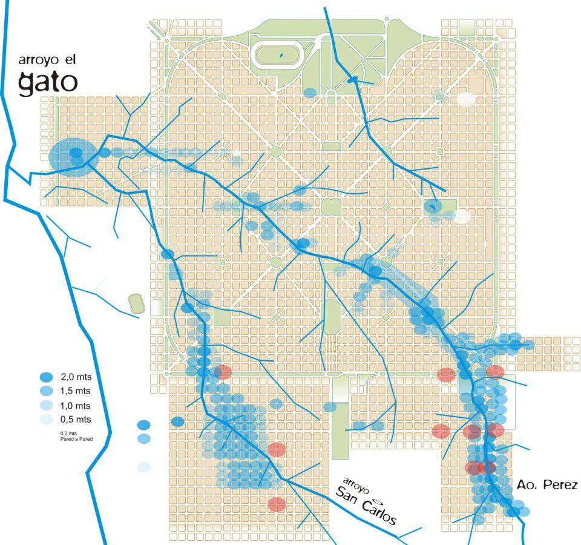
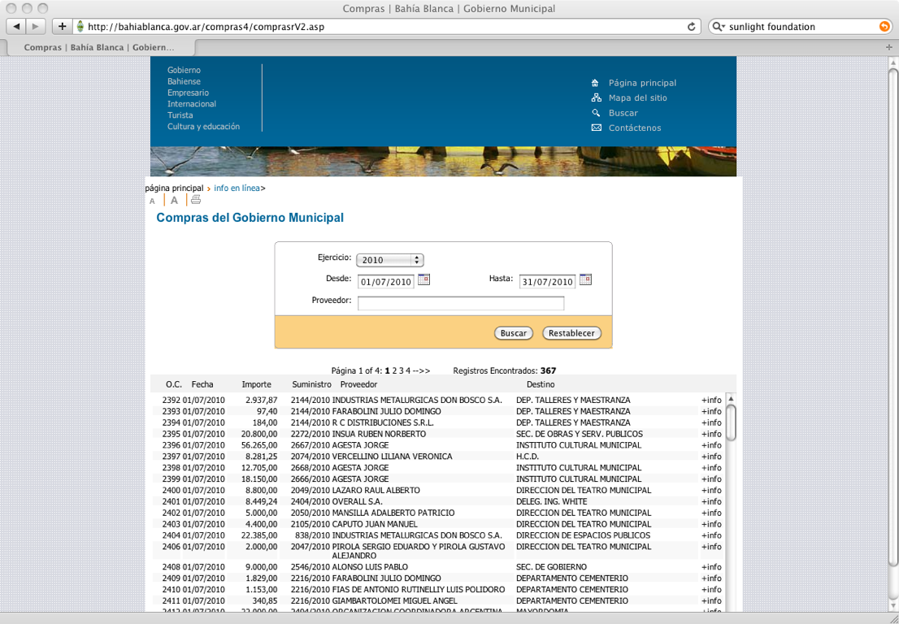
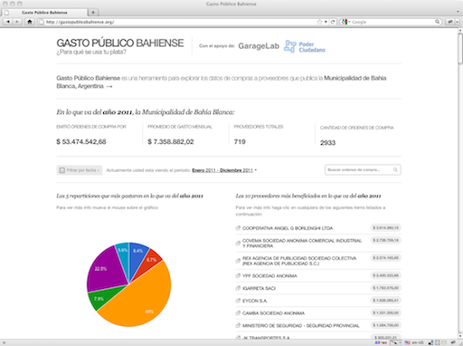
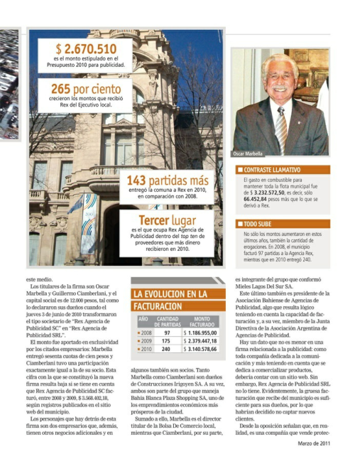
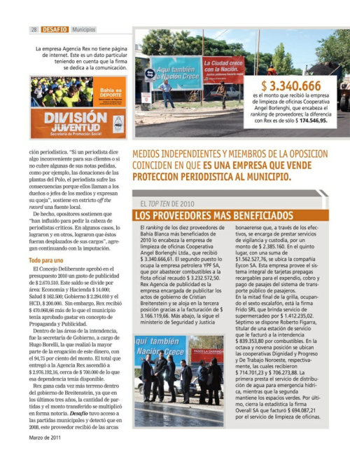
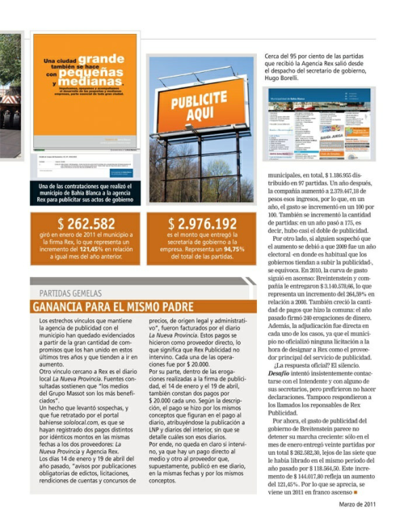
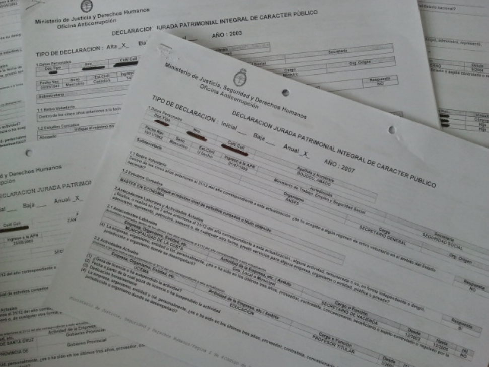

Mejores amigos: programadores y periodistas
Manuel Aristarán
@manuelaristaran
jazzido.com

+

=
...supports transformational ideas that promote quality journalism, advance media innovation, engage communities and foster the arts.
The Mozilla Foundation is a non-profit organization that promotes openness, innovation and participation on the Internet.
- Fellowships
- Hack days
- Code Sprints
- source.mozillaopennews.org
Un caso reciente: inundaciones de abril de 2013 en la ciudad de La Plata
Se sospechaba que había más víctimas que las que reconocía el gobierno
LA NACIÓN accedió a los registros de fallecimiento de los primeros 15 días de Abril
El equipo de LA NACIÓN DATA sistematizó esa información en una base de datos
- Data-entry manual de las actas, omitiendo información sensible (nombres, etc)
- Georeferenciación de cada fallecimieto
- Normalización de los datos
Entrevistando a los datos
LA NACIÓN también accedió a un plano que muestra las zonas inundadas y los cursos de agua que atraviesan la ciudad
El mapa era simplemente una imagen. No contábamos con los datos crudos
La intención era superponer las ubicaciones de las víctimas con el mapa de zonas inundadas, para probar la hipótesis
¡Llamen al programador!
¿Cómo georeferenciar una imagen?
- Georefenciar un objeto, es definir su existencia en el espacio físico
- Esto es, establecer su ubicación en términos de proyecciones geográficas o sistemas de coordenadas
- Es un procedimiento estándar para imágenes aéreas y satelitales
Georeferenciar para la web
- No necesitamos gran precisión
mapwarper.net— Herramienta libre y gratuitagdal2tiles.py
Resultado
Otro mapa, misma técnica
Otro mapa, misma técnica
GASTOPUBLICOBAHIENSE.ORG
Colaboración indirecta entre periodistas y programadores
- gastopublicobahiense.org es una herramienta de exploración y visualización de los datos de compras a proveedores publicados por el gobierno municipal de la ciudad de Bahía Blanca, Argentina
- Lanzado en julio de 2010
- Al principio fue resistido y activamente combatido por el gobierno municipal
- En 2012 cambia el intendente y se crea la Secretaría de Innovación y Gobierno Abierto.
- De combatirlo, pasaron a cooperar con GPB.
Del sitio municipal a Gasto Público Bahiense

➡

⬇



Revista Desafío Económico, Marzo 2011
¿Cuánto gastó el municipio en medios digitales en 2012?, Noticias en 10
Hubo mucha cobertura periodística acerca de gastopublicobahiense.org
...pero pocos artículos que utilicen los datos que allí se presentan.
gastopublicobahiense.org es software libre
Su código fuente puede ser extendido y reutilizado
Pronto: versiones de GPB para otros dos municipios argentinos
Las redacciones tienen una estructura jerárquica, similar a una línea de ensamblaje
Estos procesos no son "livianos", no responden bien al cambio
Involucremos a todos desde el principio hasta el final de cada proyecto
- Periodistas
- Diseñadores
- Programadores
- Analistas de datos
- Consultores
- Incluso a los managers! ☺
Aplicamos esta metodología para el desarrollo de "Proyecto Censo"
Herramienta de visualización y exploración de los datos de los Censos 2001 y 2010
http://interactivos.lanacion.com.ar/censo
Declaraciones Juradas del Poder Ejecutivo
News application de La Nación DATA
"Los bienes de los funcionarios, en una news application de LA NACION"
Conocimientos Básicos
Indispensable: saber manejar una planilla de cálculo (LibreOffice Calc, Excel, Google Spreadsheets)
- Unas nociones de estadística no vienen mal: "Statistics in a Nutshell 2nd ed" (Boslaugh — O'Reilly 2012)
- "Data Analysis" (Coursera)
Superpoder: Poder escribir un poco de código.
No hace falta ser un gran programador, pero saber programar un poquito nos permite prototipar nuestras ideas y nos ayuda a comunicarnos mejor con los programadores.
Manual de Periodismo de Datos
Traducción al español patrocinada por La Nación Data
¡Muchas gracias por su atención!
Manuel Aristarán • @manuelaristaran • jazzido.com
Barcelona, Mayo de 2013